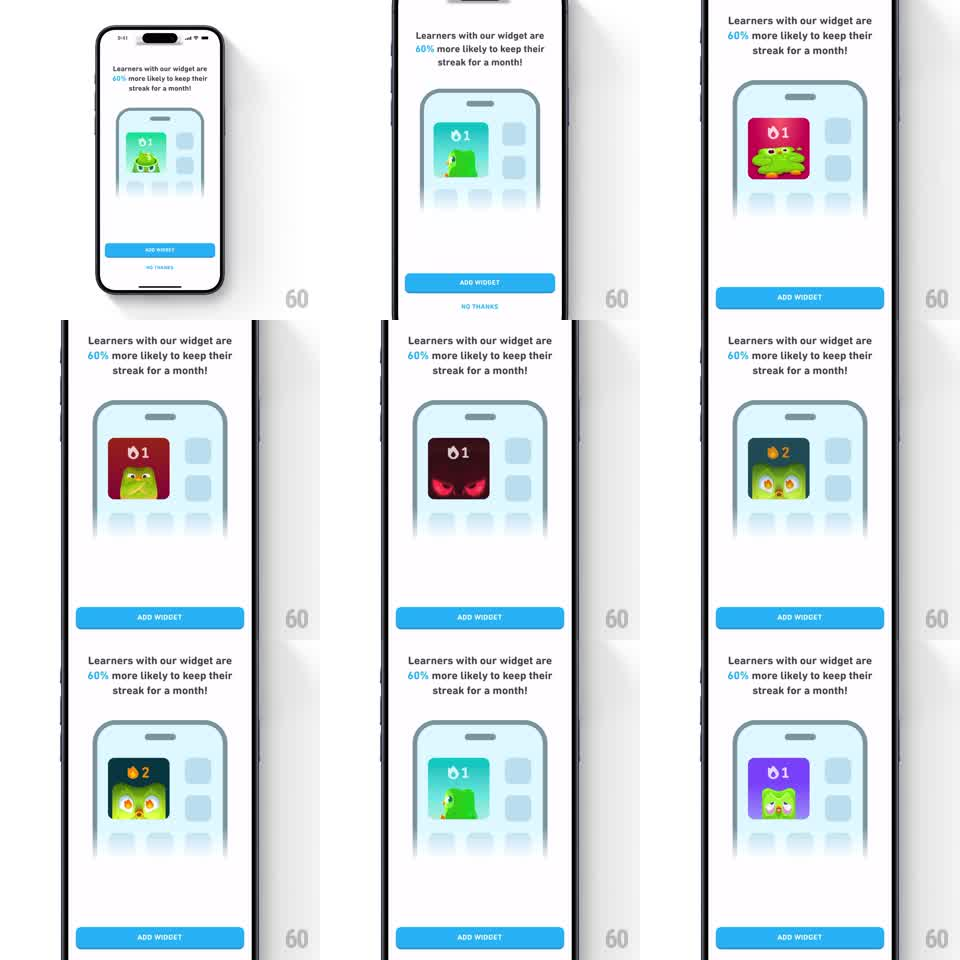

Media
Frame-by-frame

Rebuild this animation 1:1: Duolingo's add-widget promo - a phone mockup on the promo screen auto-cycles through widget states (streak flame, angry Duo, encouraging Duo), each snapping in with a vertical slide-up transition.

Rebuild this animation 1:1: Duolingo's add-widget promo - a phone mockup on the promo screen auto-cycles through widget states (streak flame, angry Duo, encouraging Duo), each snapping in with a vertical slide-up transition. ## Integration Integration: stack-agnostic spec - springs given as stiffness/damping, timed motions as duration + curve; map every value to your framework and animation library of choice. ## Scene White promo sheet: headline "Learners with our widget are 60% more likely to keep their streak for a month!", a rounded phone-frame illustration center showing a home-screen grid with one large widget tile, blue "ADD WIDGET" button, "NO THANKS" link. ## Motion spec Pattern: auto-looping vertical slide showcase. - Every ~1.2s the widget tile's content slides up and out (translateY -100%, ~250ms, ease-in) while the next state slides in from below (ease-out, same window) - a snappy slot-machine swap. - States cycle: green Duo with flame "1", red-backed angry Duo, dark Duo with glowing eyes, flame "2" Duo, purple Duo variants - at least 5 distinct widget faces. - Phone frame, grid, headline, and buttons stay static; only the widget tile content moves. ## Calibration - The swap is quick and mechanical (slot-machine), not a soft crossfade. - Hold time per state is even (~1.2s) so each face reads. ## Reduced motion Widget states crossfade (250ms). ## Don't miss - Only the widget tile animates inside the phone mock - the app grid around it is frozen. - Slide direction is always upward, never reversing.